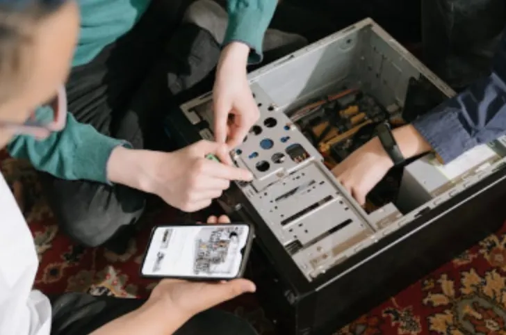

Mantenimiento
¿Qué es el mantenimiento?
El mantenimiento se refiere al conjunto de actividades y procesos destinados a conservar, reparar o mejorar un objeto, sistema o infraestructura. Su objetivo principal es asegurar que un bien funcione adecuadamente y prolongar su vida útil.
{kind=link}

Los mantenimiento son importantes debido a las siguientes razones:
- Prolongar la vida útil: Permite mantener los equipos y dispositivos funcionando correctamente durante más tiempo, maximizando la inversión realizada.
- Prevención de problemas: Ayuda a identificar y resolver problemas antes de que causen daños mayores como el daño en una persona o pérdida de información sensible.
- Ahorro económico: Un mantenimiento adecuado evita costosas reparaciones y reemplazos prematuros de equipos.
- Seguridad digital: El mantenimiento incluye aspectos de seguridad informática que protegen contra Malware o pérdidas de información.
- Eficiencia operativa: Los equipos bien mantenidos funcionan de manera más eficiente, mejorando la productividad.
Los tipos de mantenimiento son:
- Mantenimiento preventivo.
- Mantenimiento correctivo.
- Mantenimiento de actualización.
Mantenimiento preventivo (evitar el daño)
Es ideal para:
- Equipos críticos cuya falla causaría grandes pérdidas.
- Sistemas que requieren alta confiabilidad.
- Cuando el costo de una falla es mayor que el costo del mantenimiento.
- Para extender la vida útil de los equipos.
Clasificación del mantenimiento preventivo
El mantenimiento preventivo tiene la siguiente clasificación:
- Mantenimiento preventivo programado: Cuando el mantenimiento se efectúa automáticamente, en función del tiempo de vida transcurrido.
- Mantenimiento preventivo predictivo: Es aquel que se realiza cuando se ha ido revisando periódicamente el equipo, de manera que se puede anticipar cuando va a ocurrir un fallo, haciendo en ese momento la respectiva reparación.
- Mantenimiento preventivo de oportunidad: Es el mantenimiento que se desarrolla aprovechando que el equipo no está siendo utilizado, por ejemplo, cuando se para la actividad en una temporada de baja demanda. De ese modo, se evita que se tenga que detener la producción en momentos donde sería inoportuno y más costoso. Si el equipo dejara de funcionar en una coyuntura de alta demanda, la empresa tendría que alquilar otra maquinaria o perdería ventas.
Mantenimiento correctivo (el daño ocurre)
Es el mantenimiento que se realiza después de que ocurre una falla para reparar el equipo y devolverlo a su estado operativo.
Es apropiado para:
- Equipos no críticos cuya falla no afecta significativamente la operación.
- Cuando el costo de la falla es menor que el costo del mantenimiento preventivo.
- Componentes con patrones de falla aleatorios.
- Situaciones donde la reparación es simple y rápida.
Clasificación del mantenimiento correctivo
El mantenimiento correctivo tiene la siguiente clasificación:
- Mantenimiento correctivo inmediato: Es aquel que se realiza en el mismo momento en el que se identifica el daño.
- Mantenimiento correctivo diferido: Cuando se detiene la actividad del elemento afectado, pudiendo luego efectuarse la reparación correspondiente.
Mantenimiento de actualización
Se refiere a las inversiones necesarias frente a la obsolescencia tecnológica. Por ejemplo, puede tratarse de la instalación de un software o hardware que potencia el rendimiento de los ordenadores.
¿Qué tipo de mantenimiento elegir?
El mantenimiento a elegir depende de ciertos factores.
La elección entre un mantenimiento preventivo, correctivo o de actualización depende de factores como:
- Criticidad del equipo.
- Costos asociados.
- Impacto de las fallas.
- Recursos disponibles.
En la práctica, muchas organizaciones implementan una combinación de ambos tipos de mantenimiento según sus necesidades específicas.
¿Qué es la electricidad?
La electricidad es una forma de energía basada en el movimiento de cargas eléctricas (electrones) a través de materiales conductores. Es un fenómeno físico fundamental que está presente tanto en la naturaleza como en la tecnología moderna. Maneja voltajes y corrientes altos.

Las aplicaciones de la electricidad son:
- Funcionamiento de dispositivos: Todos los dispositivos electrónicos requieren electricidad para funcionar.
- Procesamiento de datos: La electricidad permite la transmisión y procesamiento de información digital.
- Infraestructura tecnológica: Las redes de comunicación y centros de datos dependen del suministro eléctrico.
- Innovación: El desarrollo de nuevas tecnologías está directamente relacionado con avances en el campo eléctrico.
- Eficiencia energética: La gestión eficiente de la electricidad es crucial para la sostenibilidad tecnológica.
La electricidad se enfoca en la generación, transmisión y distribución de energía y trabaja principalmente con corriente alterna (AC).
Algunos ejemplos de la electricidad son las instalaciones eléctricas, motores eléctricos y los transformadores.

Los componentes de la electricidad son:
- Conductores: Materiales que permiten el flujo de corriente eléctrica.
- Aislantes: Materiales que impiden el paso de la corriente eléctrica.
- Interruptores: Dispositivos para abrir o cerrar circuitos eléctricos.
- Fusibles: Dispositivos de protección contra sobre-corrientes.
- Transformadores: Modifican los niveles de voltaje.
- Generadores: Producen energía eléctrica.
- Motores: Convierten energía eléctrica en energía mecánica.
- Tableros eléctricos: Dispositivos de distribución y control.
¿Qué es la electrónica?
La electrónica estudia el control del flujo de electrones a menor escala. Maneja voltajes y corrientes más pequeños.
La electrónica se enfoca en el procesamiento de señales e información y trabaja principalmente con corriente continua (DC).
Algunos ejemplos de la electrónica son las computadoras, celulares y circuitos integrados.

Los componentes de la electrónica son:
- Resistencias: Controlan el flujo de corriente.
- Capacitores: Almacenan carga eléctrica.
- Inductores: Almacenan energía en campo magnético.
- Diodos: Permiten el flujo de corriente en una dirección.
- Transistores: Amplifican o conmutan señales.
- Circuitos integrados: Combinan múltiples componentes.
- Sensores: Detectan cambios en el entorno.
- Micro-controladores: Procesan señales y ejecutan programas.
Electrónica digital

La electrónica digital es una rama de la electrónica que se enfoca en el procesamiento de señales y datos utilizando señales discretas, generalmente representadas como combinaciones de ceros y unos (bits).
A diferencia de la electrónica analógica, que trabaja con señales continuas, la electrónica digital opera con información en formato digital, lo que la hace especialmente adecuada para el procesamiento, almacenamiento y transmisión de información de manera precisa y confiable.
Los elementos de la electrónica digital son:
- BITS: El bit es la unidad más básica de información en electrónica digital y puede tener dos valores: 0 o 1. Los bits se utilizan para representar información binaria, como números, caracteres, imágenes, etc.
- Compuertas lógicas: Las compuertas lógicas son circuitos electrónicos que realizan operaciones lógicas en señales binarias. Las compuertas lógicas más comunes incluyen: AND, OR, NOT y XOR
- Circuitos de combinación: Estos circuitos están formados por compuertas lógicas interconectadas y no tienen memoria. Su salida depende únicamente de las entradas en ese momento.
- Circuitos secuenciales: A diferencia de los circuitos de combinación, los circuitos secuenciales tienen memoria. Utilizan elementos como flip-flops y registros para almacenar información y mantener un estado interno. Ejemplos de circuitos secuenciales incluyen contadores y máquinas de estados finitos.
- Flip-flops: Los flip-flops son dispositivos de almacenamiento que contienen un solo bit y se utilizan para mantener el estado en circuitos secuenciales. Los tipos más comunes de flip-flops incluyen el flip-flop D, el flip-flop T, el flip-flop JK y el flip-flop SR.
- Multiplexores y Demultiplexores: Los (multi-plexores) son utilizados para seleccionar una de varias entradas y enrutarla a una sola salida. Los demultiplexores hacen lo contrario, tomando una entrada y seleccionando una de varias salidas posibles.
- Decodificadores y Codificadores: Los decodificadores se utilizan para convertir una entrada binaria en una selección de una de varias salidas posibles. Los codificadores hacen lo contrario, convierten una selección en una representación binaria.
- Contadores: Los contadores son circuitos secuenciales que generan una secuencia de números binarios en respuesta a un reloj de entrada. Se utilizan en una variedad de aplicaciones, como la medición del tiempo y la creación de divisores de frecuencia.
- Memorias: Las memorias digitales se utilizan para almacenar datos en sistemas digitales. Esto puede incluir RAM (memoria de acceso aleatorio) para almacenamiento temporal y ROM (memoria de solo lectura) para almacenamiento permanente. También existen tipos de memoria intermedios, como las memorias Flash.
- Convertidores Analógico-Digitales (ADC) y Digitales-Analógicos (DAC): Estos dispositivos permiten la conversión de señales entre dominios analógicos y digitales. Los ADC convierten señales analógicas en digitales, mientras que los DAC hacen lo contrario.
- Puertos de Entrada/Salida (E/S): Estos son interfaces que permiten que un sistema digital se comunique con el mundo exterior, ya sea para recibir datos (E/S de entrada) o enviar datos (E/S de salida).
- Micro-controladores y Micro-procesadores: Estos son dispositivos complejos que incorporan CPU (unidad central de procesamiento), memoria y periféricos en un solo chip. Se utilizan en una gran variedad de aplicaciones, desde electrodomésticos hasta sistemas embebidos.
Diferencia entre un microprocesador y un microcontrolador
Un micro-procesador es un elemento que realiza operaciones lógico aritméticas. No dispone de entradas y salidas como un micro-controlador. Requiere de más periféricos adicionales para funcionar, como memorias o controladores de bus. Sin embargo, son más veloces al realizar estas operaciones que un micro-controlador.

Un micro-controlador es un circuito integrado compuesto de entradas salidas, memoria y unidades lógico aritméticas. Son en sí, un elemento completo y funcional para realizar operaciones digitales. Comparados con un micro-procesador, los micro-controladores son más “lentos” dado que realizan menos instrucciones por segundo.

Hardware libre
El hardware libre son los dispositivos cuyas especificaciones y diagramas son de acceso público, de manera que cualquiera puede replicarlos. Esto quiere decir que Arduino ofrece las bases para que cualquier otra persona o empresa pueda crear sus propias placas, pudiendo ser diferentes entre ellas pero igualmente funcionales al partir de la misma base.
ARDUINO

Arduino es una plataforma de creación de electrónica de código abierto, la cual está basada en hardware y software libre, flexible y fácil de utilizar para los creadores y desarrolladores.
Esta plataforma permite crear diferentes tipos de micro-controladores de una sola placa a los que la comunidad de creadores puede darles diferentes tipos de uso.
Los micro-controladores son circuitos integrados en los que se pueden grabar instrucciones, las cuales usted escribe con el lenguaje de programación que se utiliza en el entorno Arduino IDE. Estas instrucciones permiten crear programas que interactúan con los circuitos de la placa.
Arduino posee lo que se llama una interfaz de entrada, que es una conexión en la que se puede conectar en la placa diferentes tipos de periféricos. La información de estos periféricos que usted conecte se trasladará al micro-controlador, el cual se encargará de procesar los datos que le lleguen a través de ellos.
El tipo de periféricos que usted pueda utilizar para enviar datos al micro-controlador depende en gran medida de qué uso le esté pensando dar. Pueden ser:
- Cámaras para obtener imágenes
- Teclados para introducir datos
- Diferentes tipos de sensores.
También cuenta con una interfaz de salida, que es la que se encarga de llevar la información que se ha procesado en el Arduino a otros periféricos. Estos periféricos pueden ser:
- Pantallas
- Altavoces en los que reproducir los datos procesados
- Otras placas o controladores.
Raspberry PI

Una Raspberry PI es un ordenador del tamaño de una tarjeta de crédito. Consiste en una placa base que soporta distintos componentes de un ordenador como un micro-procesador ARM de hasta 1500 MHz, un chip gráfico y una memoria RAM de hasta 8 GB.
Gracias a sus puertos y entradas, permite conectar dispositivos periféricos. Por ejemplo:
- Una pantalla táctil.
- Un teclado e incluso un televisor.
Contiene un procesador gráfico VideoCoreIV, con lo que permite la reproducción de vídeo “incluso en alta definición”. Permite la conexión a la red a través del puerto de Ethernet, y algunos modelos permiten conexión Wifi y Bluetooth. Consta de una ranura SD que permite instalar (a través de una tarjeta microSD) sistemas operativos libres basados en LINUX.